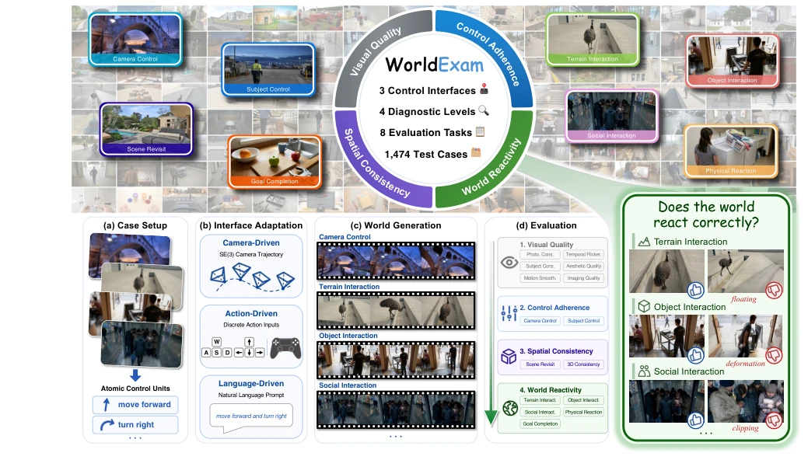
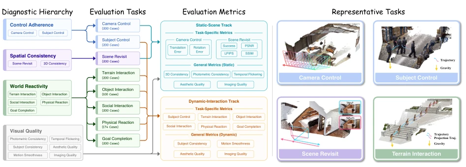
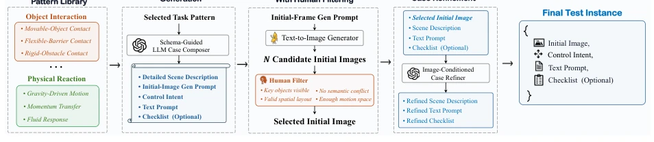
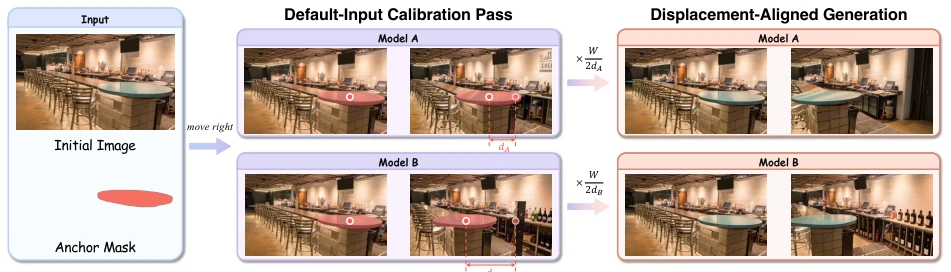
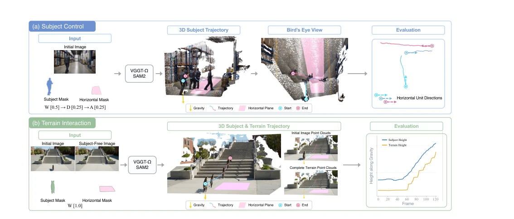
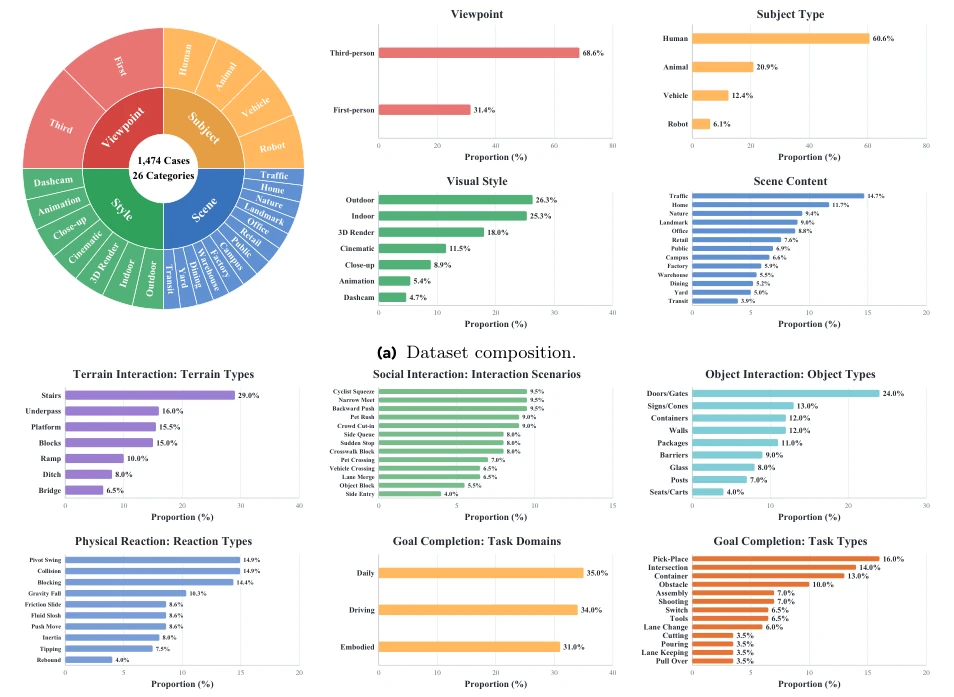
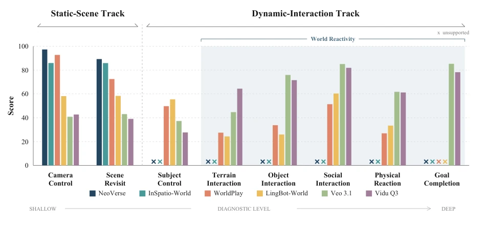
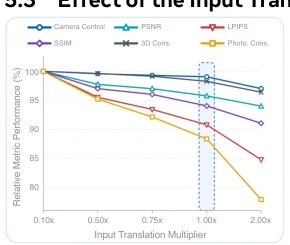
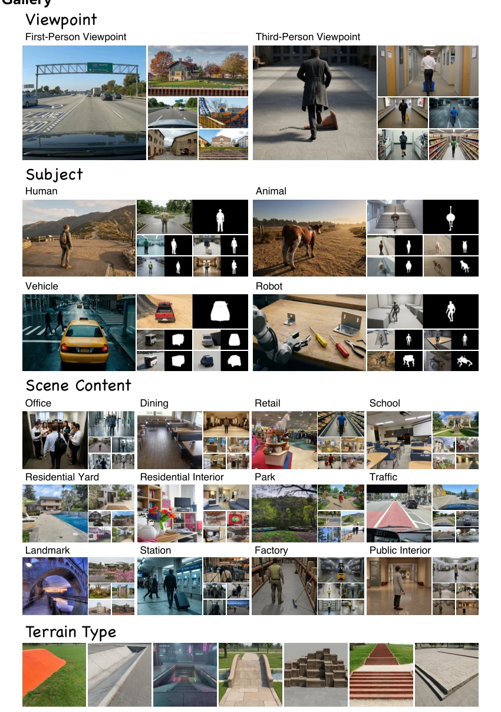
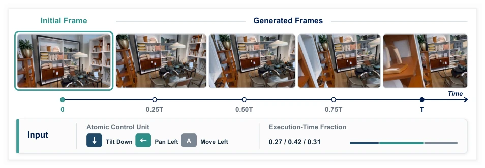

The WorldExam paper serves as a cold shower to the current prevalence of "video generation as world models". The authors keenly point out that current evaluations mostly engage in "describing pictures", where winning is simply if the model draws the actions in the instruction, completely ignoring the core "inherent reactivity" of world models—that is, whether the world should move and how when the input is not explicitly stated. This is like a driving test, only testing "drive the car to point A", but not testing "do you know to brake if there is someone in front". Existing works such as WorldScore [10] and Omni-WorldBench [49] although covering some interactions, essentially still verify "whether the instruction is executed", rather than "whether the logic is consistent". The harshness of WorldExam lies in separating "explicit instructions" and "implicit inference", directly refuting models that are visually exquisite but physically logical nonsense. However, relying on VLM as a judge (GPT-5.5) although saves trouble, also introduces new subjectivity and hallucination risks, and requires extremely high computational resources, does this count as another form of "black-box evaluation"?
Current controllable video generation models are widely regarded as world models, but existing evaluation systems have serious biases. Most benchmarks (such as WorldScore [10], MIND [57], Omni-WorldBench [49]) mainly focus on generated visual quality or explicit instruction fulfillment. For example, Omni-WorldBench [49] although evaluates interaction results, its instructions often directly specify expected interaction consequences, leading models to only "imitate blindly", without truly understanding scene states. This evaluation method cannot distinguish whether the model truly understands physical laws and scene logic, or is merely memorizing statistical patterns in training data. True world models should possess "inherent reactivity", i.e., inferring consequences not explicitly described in the input based on scene states (such as automatically avoiding obstacles when encountering them, automatically stopping when characters enter social distance). Existing works such as WorldMark [52] and iWorld-Bench [11] although attempting to unify interfaces, still have not solved the evaluation difficulty of "implicit inference". Therefore, there is an urgent need for a benchmark that can distinguish "visual fidelity" from "logical consistency", to reveal current models' shortcomings in physical common sense and causal reasoning.

Figure 1 Overview of WorldExam. WorldExam is a hierarchical diagnostic benchmark from apparent appearance to inherent reactivity. It evaluates 1,474 test cases across camera-, action-, and language-driven interfaces, four diagnostic levels, and eight tasks under a unified evaluation pipeline.
方法Method
WorldExam 构建了一个分层诊断框架，旨在统一评估相机驱动、动作驱动和语言驱动三种范式的模型。整体流程分为四个层级：视觉质量、控制遵循、空间一致性和世界反应性。首先，通过“原子控制单元”（Atomic Control Units）将复杂行为拆解为基本动作（如W/S/A/D），并适配到不同模型的原生接口（SE(3)轨迹、离散动作或自然语言）。在数据构建上，采用自动化与人工筛选结合的流程：利用LLM生成结构化场景描述和初始图像，经人工过滤确保物理可行性，最后生成包含“显式指令”但隐去“预期反应”的测试用例。评测指标设计极具针对性：对于相机控制和场景重访（Scene Revisit），利用VGGT-Ω进行3D几何重建，计算轨迹误差和重访一致性；对于地形交互和物体交互，同样基于3D轨迹投影评估物理接触；而对于社会交互、物理反应和目标完成等复杂任务，则引入VLM（GPT-5.5）作为裁判，依据预定义的Checklist进行二元判断。特别值得一提的是，针对相机驱动模型，提出了图像空间位移对齐（Image-space displacement alignment）校准方法，通过测量默认输入下的位移并缩放输入参数，消除不同模型对平移量解释的差异，确保评测公平性。
WorldExam constructs a hierarchical diagnostic framework, aiming to uniformly evaluate models of three paradigms: camera-driven, action-driven, and language-driven. The overall process is divided into four levels: visual quality, control following, spatial consistency, and world reactivity. First, through "Atomic Control Units", complex behaviors are decomposed into basic actions (such as W/S/A/D), and adapted to native interfaces of different models (SE(3) trajectories, discrete actions, or natural language). In data construction, a process combining automation and manual screening is adopted: using LLM to generate structured scene descriptions and initial images, filtered manually to ensure physical feasibility, finally generating test cases containing "explicit instructions" but hiding "expected reactions". Evaluation metrics design is highly targeted: for camera control and Scene Revisit, using VGGT-Ω for 3D geometric reconstruction, calculating trajectory error and revisit consistency; for terrain interaction and object interaction, also based on 3D trajectory projection to evaluate physical contact; while for social interaction, physical reaction, and goal completion etc. complex tasks, introduce VLM (GPT-5.5) as judge, based on predefined Checklist for binary judgment. Particularly worth mentioning, for camera-driven models, proposes Image-space displacement alignment calibration method, by measuring displacement under default input and scaling input parameters, eliminating differences in translation interpretation among different models, ensuring evaluation fairness.

Figure 2 WorldExam taxonomy, tracks, and metrics. Four diagnostic levels map to eight evaluation tasks, which are assigned to static-scene or dynamic-interaction tracks according to scene assumptions and model applicability. Each track reports task-specific and general metrics. Representative examples illustrate the geometry-based evaluations.

Figure 3 Test case curation pipeline. For the six dynamic-interaction tasks, a task pattern is expanded into a structured draft, candidate initial images are generated and human-filtered, and the scene description, text prompt, and optional checklist are refined against the selected image before the case is finalized.

Figure 5 Image-space displacement alignment for camera-driven models. Given an initial image and anchor mask for case c, WorldExam measures model m’s image-space displacement dm,c in a default-input calibration pass and scales its input translations by km,c = W/(2dm,c) to align displacement across camera-driven models.

Figure 6 Geometry-based evaluation of Subject Control and Terrain Interaction. (a) SAM2 and VGGT-Ωrecover the subject trajectory, while the horizontal-region mask estimates gravity and the horizontal plane used to define the control directions. (b) A subject-free image restores the complete terrain geometry, onto which the trajectory is projected along gravity to obtain corresponding terrain trajectory.
The authors evaluated 20 representative models on the WorldExam benchmark, covering three paradigms. The dataset contains 1474 test cases, divided into static scenes and dynamic interaction two tracks. Experimental results show that currently no model can perform excellently in all levels simultaneously. Camera-driven models (such as NeoVerse [56]) perform extremely well in camera control and spatial consistency, but lack dynamic interaction capabilities; Action-driven models (such as WorldPlay [38]) can precisely control the subject, but often lead the world to be "unresponsive"; Language-driven models perform better on interaction tasks, but worse on complex control following. Key finding is, high visual quality and explicit instruction fulfillment do not guarantee inherent reactivity, many models score extremely low on "world reactivity" level, exposing their lack in physical common sense and causal reasoning. Ablation experiments further verify the importance of image-space displacement alignment, uncalibrated models show significant score drops on camera control tasks.

Figure 4 Benchmark statistics. The top panel summarizes distributions by viewpoint, subject type, visual style, and scene content. The bottom panel shows terrain types, social-interaction scenarios, object types, physical-reaction types, and Goal Completion domains and task types.

Figure 8 Task-level performance across evaluation tracks. Two models per interface are compared across all eight tasks, ordered from static-scene diagnostics through Subject Control to World Reactivity; crosses mark unsupported tasks.
其他图片Other Figures

Figure 7 Effect of the input translation multiplier on NeoVerse.

Figure 9 WorldExam Gallery. Representative test cases span first- and third-person viewpoints; human, animal, vehicle, and robot subjects; diverse indoor and outdoor scene content; and a range of terrain types.

Figure 10 Camera Control. The three atomic camera controls occupy 0.27, 0.42, and 0.31 of the video, respectively.